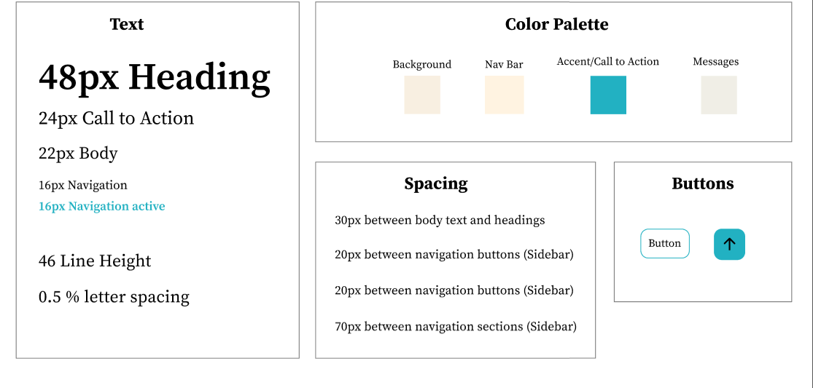
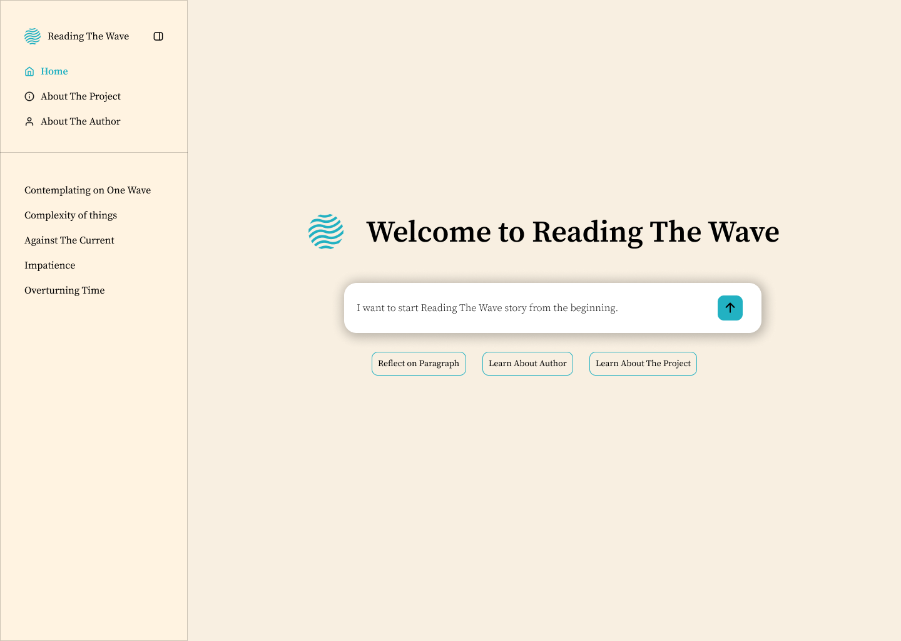
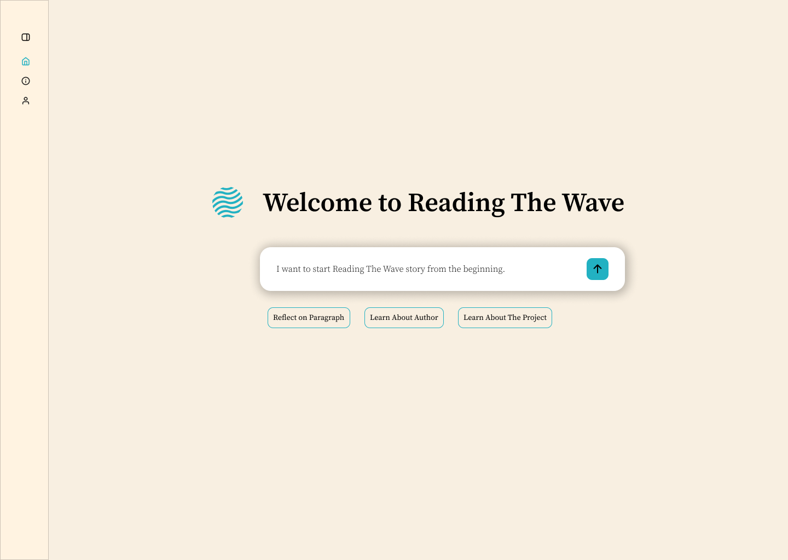
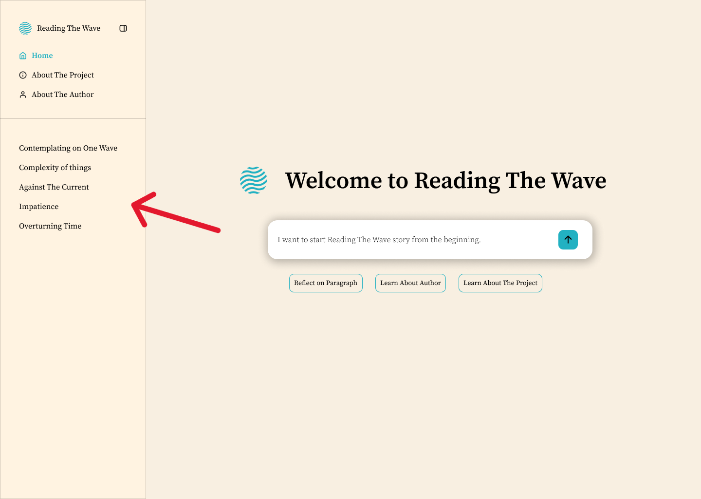
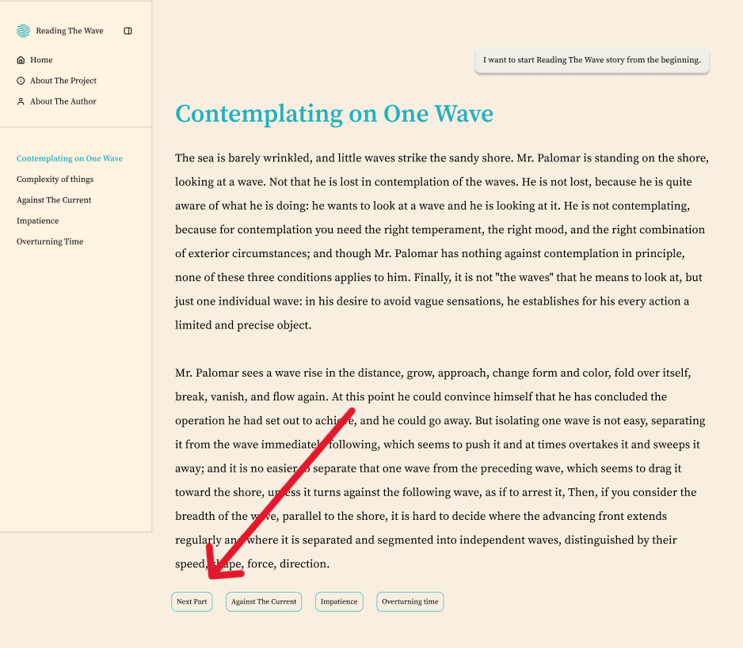

Overview In this project I was tasked with turning a chapter from a book ‘’Mr. Palmero’’ into an interactive website that would portray the story in a creative way.
Standard books are often difficult to read for most people who are often unskilled readers, people who can read, however reading long passages and entire pages takes a toil on their cognitive abilities. The task at hand was to turn a normal page from a book titled ‘’Mr. Palermo’’ into a more readable and easy to follow experience.

My vision was to take the style and experience characteristic of AI interfaces and implement it into the navigation through the story. That meant using a minimalistic color palette with one distinguished call to action/accent color, a primary background color that creates contrast between itself and the interface. And 2 subtle variations of the primary color that distinguish the nav bar and messages in the ‘’AI chat’’.
The font used was ‘’Source Serif Pro’’. I chose it to combine the AI minimalism with the vibe of reading a book. In the body text I ensured to increase the line height and letter spacing to make the large paragraphs more readable for non skilled readers.


When it came to layout I utilized the characteristic combination of horizontal layout and vertical menu in the side navbar. The large heading followed by a chat message bar serves as the clear entry point for the user into the experience. The side navbar marks the current location in order to help the user easily navigate through different options while avoiding confusion and mix up. Additionally Escape hatch is available by clicking on the home button in the side bar at all times throughout the experience.


The website mixes a few different navigation patterns and gives the user freedom to choose how they wish to navigate. Firstly the website is fully connected, meaning the users can get to any page wherever they might be in the process of reading the story. The story can also be read step by step by using the button (next) on the bottom of each part and likewise a pyramid pattern can be found here as the steps aren't linear but the return to main page option is present.
This project allowed me to explore how AI-inspired interfaces can simplify complex content of the website. I was particularly interested in how minimal design can reduce friction and make information easier to process for the users. Designing this website helped me apply those principles in practice, and in the future, I aim to further explore interfaces that combine simplicity with immersive user experiences.